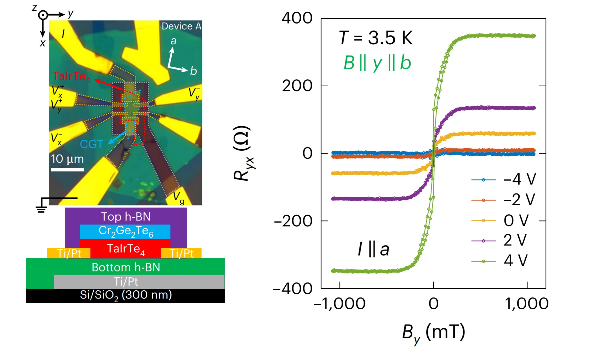
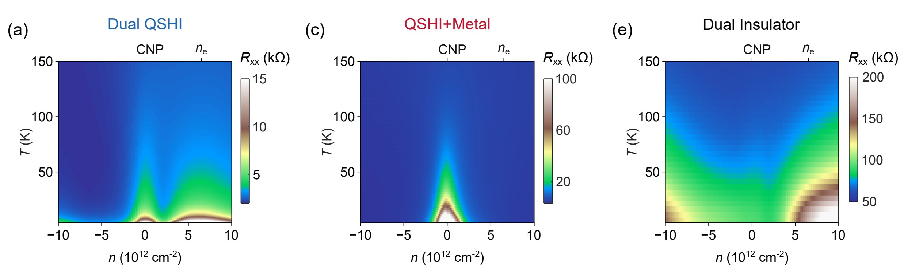
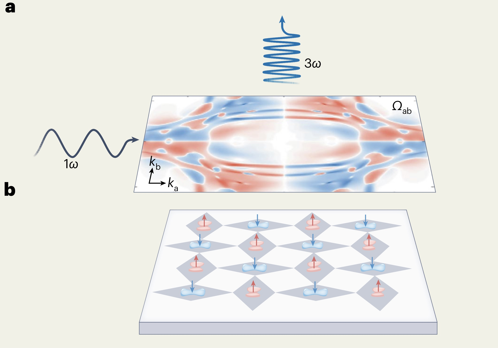

Latest News
-
July 2026
The Semiconductor Parameter Analyzer has been installed in our lab. Many thanks to Dr. Jiaojiao Zhao for his assistance!
- Jun 2026
The transfer stage has been installed in our interim lab space. The glovebox and optical microscope are on their way, further expanding our in-house capabilities for vdW heterostructure assembly and device fabrications. Stay tuned!
- May 2026
Our collaborative paper, In-plane anomalous Hall effect in a low-dimensional system, has been published in Nature Materials (Link).

This work demonstrates a gate-tunable, magnetization-driven in-plane anomalous Hall effect in a heterostructure composed of TaIrTe4 and layered ferromagnetic insulator Cr2Ge2Te6. Congrats!- May 2026
Our collaborative work, Interaction-driven topological transitions in monolayer TaIrTe4, has been accepted by Phys. Rev. X (Link).

This work reveals correlation-driven topological phenomena, including QSH insulator, trivial insulator, higher-order topological insulator, and metal phases. Congratulations!- May 2026
Our News & Views article, A nonlinear route to altermagnetism, has been published in Nature Nanotechnology (Link).

The article highlights nonlinear electrical responses as a route to revealing quantum geometry and signatures of altermagnetism in ruthenium dioxide thin films. Cheers!- Apr 2026
Jian joined Zhejiang University and launched the Jian Tang Lab in the Department of Physics.
- Jun 2026